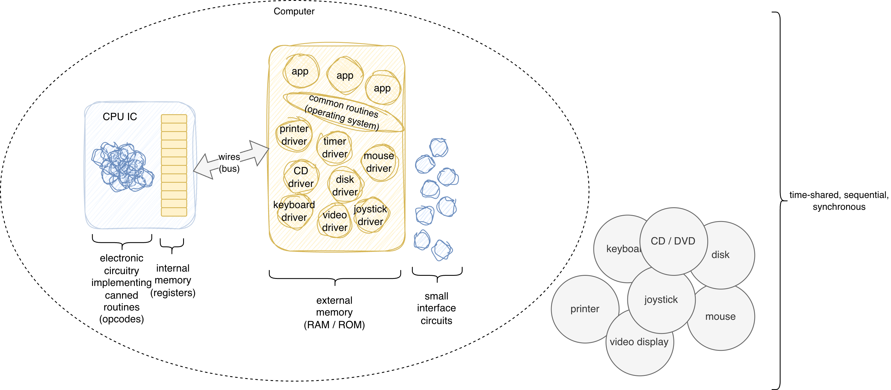
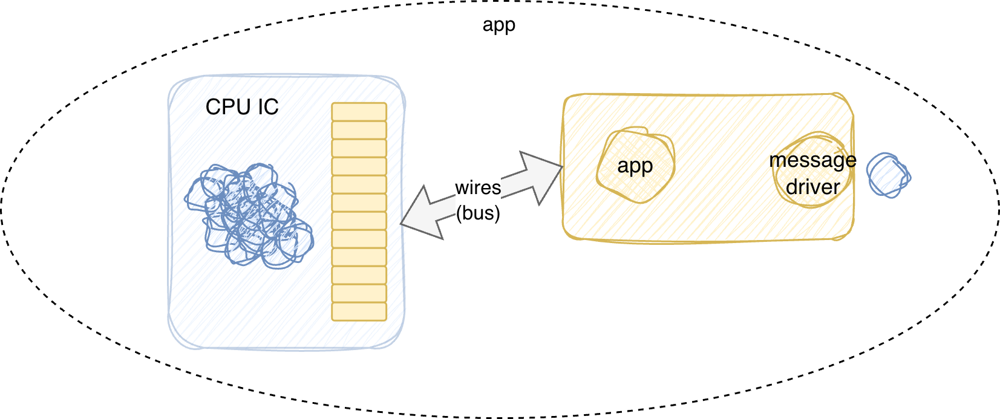
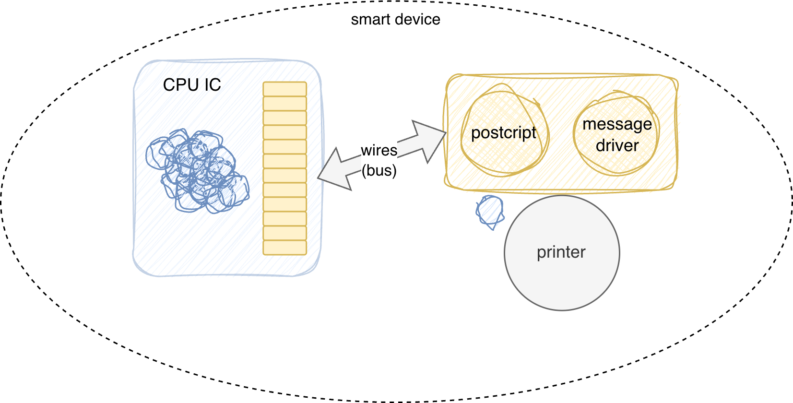
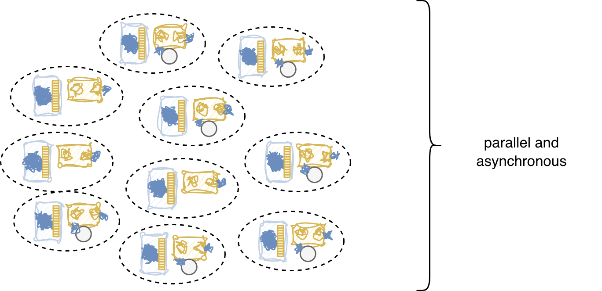
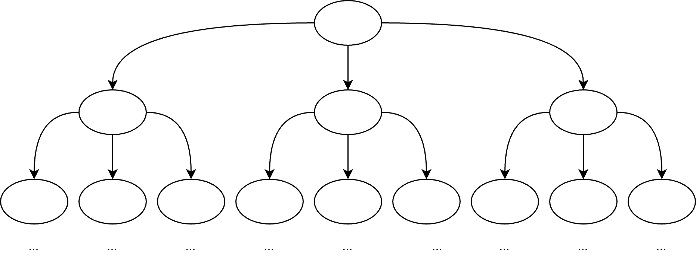
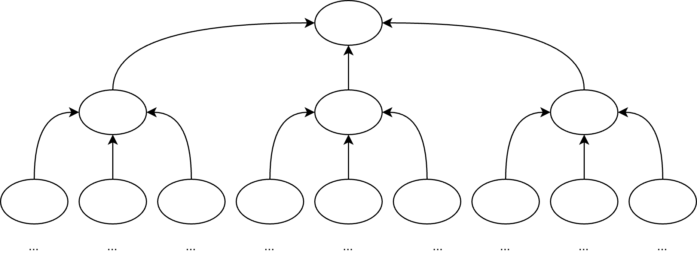

The centralized CPU model is a historical accident driven by 1950s economics. CPUs and memory were expensive, so we time-shared a single machine and faked parallelism. Hardware has since gotten cheap. We should stop architecting software as if it hasn’t.

Early computers were extraordinarily expensive. CPUs and memory cost fortunes. This economic reality drove a specific architectural choice: one central processor, shared by many processes, switching between them fast enough to create the illusion of simultaneous execution. That illusion is what we call multitasking.
The illusion has a cost. Processes sharing memory introduce race conditions. Race conditions require thread safety. Thread safety requires locks. Locks introduce deadlocks. Deadlocks require careful engineering. That careful engineering leaks into every layer of the stack — operating systems, runtimes, frameworks, application code.
This is not a law of nature. It is a tax on a design decision made when hardware was scarce.
The shared-memory model does not extend to distributed systems. The internet is not a shared-memory machine. Nodes are physically distant. Network latency is measured in milliseconds, not nanoseconds. Packets are dropped. Clocks drift. Nothing is synchronized by default.
We have spent decades building increasingly complicated machinery to paper over this mismatch — cache coherency protocols, multi-core synchronization hardware, distributed consensus algorithms, eventual consistency models. Each layer of complexity is a response to the fundamental mismatch between a shared-memory mental model and a physically asynchronous reality.
The hardware knows the truth. CPUs run in parallel. Network nodes run in parallel. The hardware is asynchronous by default. The software pretends otherwise.
Thread safety is not a property of programs. It is a property of the shared-memory model. Remove shared memory and thread safety ceases to exist as a concept. It does not need to be solved. It needs to be made irrelevant.
This distinction has been lost. A generation of language designers treated thread safety as a fundamental problem of computation and built it into the core of their languages. Mutexes, semaphores, atomic operations, memory barriers, volatile qualifiers, synchronized blocks — these are not features. They are patches on an architecture that should not have required them.
The damage runs deeper than syntax. Languages now ship with concurrency primitives as first-class citizens. Programmers learn these primitives early and internalize them as part of what programming is. The question is no longer “why does this need a lock?” The question is “which kind of lock should I use here?” The accidental complexity has been promoted to essential complexity. It appears in textbooks. It appears in job interviews. It appears in the checklist of skills a senior engineer is expected to possess.
Most working programmers today have never written production software that does not grapple with thread safety in some form. To them it is simply part of the job — as natural and unavoidable as parsing or memory allocation. The idea that the entire concern could be eliminated by a different architecture is not on the table. It is not even a thought that occurs to ask.
This is how accidental complexity becomes permanent. Not by conspiracy, but by familiarity. Each generation of programmers learns the workarounds, masters them, teaches them to the next generation, and the underlying architectural mistake recedes further from view.
CPUs and memory are now cheap. The economic constraint that justified the centralized model has evaporated.
The decentralized model takes the hardware at face value. Each node has its own CPU and private memory. Nodes do not share memory. Nodes communicate by passing messages. This is not a simulation of parallelism — it is actual parallelism.

#### Smart Devices
#### Decentralized Model
#### Consequences The consequences are significant. Thread safety disappears as a concern. There is nothing to share. The operating system’s job of mediating access to shared resources shrinks, or vanishes entirely. Applications own their CPU. They are not slowed by context-switching or contention.Apple demonstrated this in hardware decades ago. The LaserWriter was a smart printer. It ran PostScript on its own CPU with its own memory. The Macintosh sent it a document; the printer handled the rest. The HP model of the same era exposed raw printer hardware to the host CPU — the host had to manage the device. Apple’s model was right. The device is smart. The wire carries messages.
Early message-passing systems failed. The reason is not that message passing is wrong. The reason is that unstructured message passing does not scale.
The solution is hierarchy. Messages flow as requests down the tree and summaries flow back up. No node communicates directly with its peers. A node sends requests to its direct subordinates and receives results from them. Peer-to-peer communication is handled entirely by a common parent node — there is no going over the boss’s head, and no reaching two levels down to micromanage a subordinate’s subordinates.
This is not a novel idea. It is how every functional organization has operated for centuries. Large businesses stay coherent by enforcing exactly this discipline. The org chart is not bureaucratic overhead. It is a scaling solution. The same discipline that keeps a ten-thousand-person company from collapsing into chaos is what keeps a distributed software system from collapsing into an undebuggable message storm.
A node knows only its direct children. It does not know what those children do internally. It does not reach past them to micromanage their subordinates. This is topology-blindness applied to network architecture.

#### Summary Flow
### The development environment needs to change tooOne honest complication: software development happens on single machines. A developer writing a decentralized application is still sitting in front of one CPU with shared memory.
Right now, we handle this backwards. We build systems that fake asynchronous processing as if it were synchronous — we write code that calls remote services as if they were simple function calls that pause, wait for a result, and always return — as if the network were just a slow piece of memory — then we hide the asynchrony and spend enormous effort managing the consequences when the illusion breaks. Then we ship the entire development environment to users. Users must buy computers running operating systems that support faked multi-processing. The bloat, the context-switching overhead, the complicated scheduling algorithms — all of it lands on the user’s machine because we never separated the development model from the deployment target.
We need to invert this. Development systems should fake asynchronous message-passing on a single machine, not fake synchrony on top of an asynchronous reality. Each component should be treated as if it owns a private CPU and private memory. Components communicate only by passing messages. No shared memory. No thread safety. The fact that the underlying machine is actually running these components by time-sharing a single CPU is an implementation detail of the development environment — not an architectural assumption that bleeds into the design.
One might expect that faking message-passing on a single development machine would make apps noticeably slower. This is not obviously true. Avoiding shared memory by default does impose a cost on apps that genuinely benefit from bulk data transfers — but it does not tax the vast majority of apps that never needed that optimization in the first place. The current version of PBP builds this fake asynchronous processing from scratch, in a green-thread manner. This implies — though it has not yet been fully tested — that PBP does not actually require an operating system as we know it. If that holds, the target hardware does not need to be burdened with a bloated OS, nor with the costs of time-sharing, context-switching, and the overhead of complicated scheduling algorithms. We should be able to ship simpler, leaner systems to users. Not copies of our development environments.
Our current workflow makes this worse in a specific way. We write single synchronous nodes first, then retrofit reactivity onto them so they can be plumbed together — callbacks, event emitters, promise chains, async/await. This is programming asynchrony in assembler. We are manually encoding, at the application level, coordination that should be handled in a higher level, asynchronous architectural manner. The result is code that is hard to read, hard to reason about, and hard to compose.
That said, the existing body of synchronous software is not worthless. Code written for a single synchronous node can be wrapped and treated as a leaf component in a larger asynchronous scheme. The wrapper handles the message boundary. The interior of the component stays exactly as it was. This gives us a migration path. We do not need to discard what works. We need to stop using it as the architectural model for the whole system.
Electrical engineers have run this architecture for as long as there have been chips. VHDL synthesis describes hardware components with private state communicating through ports. Schematics are topology diagrams, not shared-memory diagrams. EEs do not worry about thread safety. Their components run in parallel because the hardware runs in parallel.
Software inherited the centralized model from economic necessity. The necessity is gone. The model should follow.
Email:
[ptcomputingsimplicity@gmail.com](mailto:ptcomputingsimplicity@gmail.com
Substack: paultarvydas.s.
bstack.com
Videos: https://www.
youtube.com/@programmingsimplicity2980
Discord: https://discord.gg/65YZUh6J.
q
Leanpub: https:.
/leanpub.com/u/paul-tarvydas
Twitter: @paul_tarvydas
Bluesky: @paultarvydas.bsky.social
Mastodon: @paultarvydas
(earlier) Blog: guitarvydas.github.io
References: https://guitarvydas.github.io/2024/01/06/References.html
Paid subscriptions are a voluntary way to support this work.